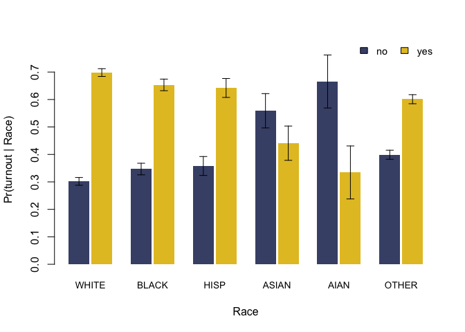

Bayesian Instrumental Regression for Disparity Estimation (BIRDiE) is a class of Bayesian models for accurately estimating conditional distributions by race, using Bayesian Improved Surname Geocoding (BISG) probability estimates of individual race. This package implements BIRDiE as described in McCartan, Goldin, Ho and Imai (2022). It also implements standard BISG and an improved measurement-error BISG model as described in Imai, Olivella, and Rosenman (2022).

Installation
You can install the development version of birdie from GitHub with:
# install.packages("remotes")
remotes::install_github("CoryMcCartan/birdie")Basic Usage
A basic analysis has two steps. First, you compute BISG probability estimates with the bisg() or bisg_me() functions. Then, you estimate the distribution of an outcome variable by race using the birdie() function.
library(birdie)
data(pseudo_vf)
head(pseudo_vf)
#> # A tibble: 6 × 4
#> last_name zip race turnout
#> <fct> <fct> <fct> <fct>
#> 1 BEAVER 28748 white yes
#> 2 WILLIAMS 28144 black no
#> 3 ROSEN 28270 white yes
#> 4 SMITH 28677 black yes
#> 5 FAY 28748 white no
#> 6 CHURCH 28215 white yesTo compute BISG probabilities, you provide the last name and (optionally) geography variables as part of a formula.
r_probs = bisg(~ nm(last_name) + zip(zip), data=pseudo_vf)
head(r_probs)
#> # A tibble: 6 × 6
#> pr_white pr_black pr_hisp pr_asian pr_aian pr_other
#> <dbl> <dbl> <dbl> <dbl> <dbl> <dbl>
#> 1 0.956 0.00371 0.0103 0.000674 0.00886 0.0202
#> 2 0.162 0.795 0.0122 0.00102 0.000873 0.0292
#> 3 0.943 0.00378 0.0218 0.0107 0.000386 0.0202
#> 4 0.569 0.365 0.0302 0.00114 0.00108 0.0339
#> 5 0.971 0.00118 0.0131 0.00149 0.00118 0.0125
#> 6 0.524 0.315 0.0909 0.00598 0.00255 0.0610Computing regression estimates requires specifying a model structure. Here, we’ll use a Categorical-Dirichlet regression model that lets the relationship between turnout and race vary by ZIP code. This is the “no-pooling” model from McCartan et al. We’ll use bootstrapping to approximately measure the uncertainty in our estimates.
fit = birdie(r_probs, turnout ~ proc_zip(zip), data=pseudo_vf,
family=cat_dir(), algorithm="em_boot")
#> Using weakly informative empirical Bayes prior for Pr(Y | R)
#> This message is displayed once every 8 hours.
print(fit)
#> Categorical-Dirichlet BIRDiE model
#> Formula: turnout ~ proc_zip(zip)
#> Data: pseudo_vf
#> Number of obs: 5,000
#> Estimated distribution:
#> white black hisp asian aian other
#> no 0.302 0.347 0.358 0.559 0.666 0.399
#> yes 0.698 0.653 0.642 0.441 0.334 0.601The proc_zip() function fills in missing ZIP codes, among other things. We can extract the estimated conditional distributions with coef(). We can also get updated BISG probabilities that additionally condition on turnout using fitted(). Additional functions allow us to extract a tidy version of our estimates (tidy()) and visualize the estimated distributions (plot()).
coef(fit)
#> white black hisp asian aian other
#> no 0.3019191 0.3467984 0.3579254 0.559023 0.6655915 0.3988616
#> yes 0.6980809 0.6532016 0.6420746 0.440977 0.3344085 0.6011384
head(fitted(fit))
#> # A tibble: 6 × 6
#> pr_white pr_black pr_hisp pr_asian pr_aian pr_other
#> <dbl> <dbl> <dbl> <dbl> <dbl> <dbl>
#> 1 0.962 0.00339 0.00974 0.000499 0.00581 0.0189
#> 2 0.0439 0.927 0.00821 0.000922 0.000897 0.0186
#> 3 0.942 0.00490 0.0228 0.00491 0.000331 0.0249
#> 4 0.579 0.362 0.0240 0.000860 0.000739 0.0329
#> 5 0.964 0.00145 0.0149 0.00251 0.00224 0.0146
#> 6 0.547 0.305 0.0886 0.00378 0.00141 0.0541
tidy(fit)
#> # A tibble: 12 × 3
#> turnout race estimate
#> <chr> <chr> <dbl>
#> 1 no white 0.302
#> 2 yes white 0.698
#> 3 no black 0.347
#> 4 yes black 0.653
#> 5 no hisp 0.358
#> 6 yes hisp 0.642
#> 7 no asian 0.559
#> 8 yes asian 0.441
#> 9 no aian 0.666
#> 10 yes aian 0.334
#> 11 no other 0.399
#> 12 yes other 0.601
plot(fit)
A more detailed introduction to the method and software package can be found on the Get Started page.